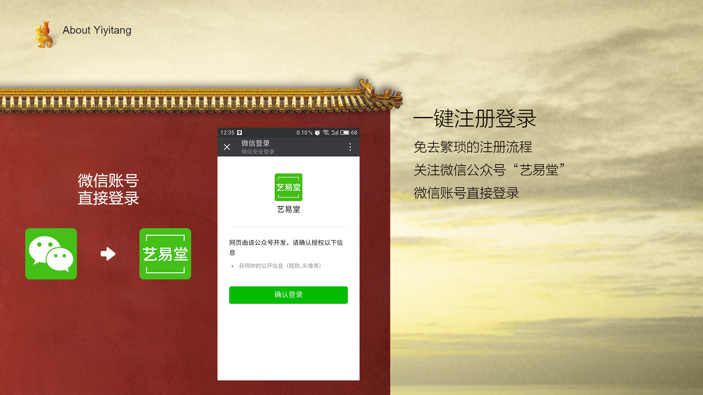

艺易堂11月1日上线公测，诚邀您入驻！
浙江博艺网络文化有限公司历经十年风华，耕耘于艺术品市场，见证了十年来中国艺术品市场的发展，也见证了十年互联网科技迅速发展。为了繁荣传统艺术品市场，为艺术品市场、艺术家、民众建立更好的平台与桥梁，博艺一直在努力探索与实践，积极拥抱变化，是为行业先行者。
作为艺术电商践行者，博艺拥抱时代变化，作为一个艺术平台，博艺对振兴、繁荣艺术品市场一直怀有强烈的使命感。博艺在不断探索、开发后推出了“艺易堂”。艺易堂是全新的艺术品在线交易平台，助力于微信平台的二次开发，无需安装的轻web应用，使你简单方便地即可拥有自己的艺术品专卖店，无论上拍、竞拍都可便捷轻松地完成。
任何个人、商家、艺术家都可以成为卖家！一键式注册、登录免去了繁琐的注册流程。关注微信公众号“艺易堂”，用个人的微信账号可直接登录。
艺易堂打造全国首创的艺术家官方店铺。艺术家本人在艺易堂上开设店铺并上拍本人作品。让藏家直面艺术家，打造全新的艺术品流通模式。
艺术品专业机构入驻。通过艺易堂的认证及保证金机制，保证了入驻机构的拍品质量。同时保障了藏家用户的权益。
艺易堂的几大优势：

1. 入驻便利：任何个人，商家，艺术家都可以成为卖家。一键式注册、登录免去了繁琐的注册流程。关注微信公众号“艺易堂”，用个人的微信账号可直接登录；
2. 上拍便捷：手机直接拍摄，即拍即传。填上一些简单信息，拍卖就是如此简单；
3. 支付保障：博艺旗下的公司主体负责艺易堂的开发运营、微信支付，支付宝、银联皆可安全完成支付、收款；
4. 一键分享：使用微信内置分享功能，分享简单。让更多用户接触艺术品，参与竞拍；
5. 打通易艺拍：实现艺易堂与艺易拍APP的无缝对接，使两者数据互通、相互推广；
6. 大数据、官方推广：艺易堂借助博艺运营10年积累的大数据信息，针对性地进行兴趣、买卖成交分析等。力推您的店铺、拍品，更精准地配对购买人群。 厚积薄发的新爆点！艺易堂将重新定义艺术品市场与拍卖行业，我们期待您的加入！
由 艺易堂 提供技术支持